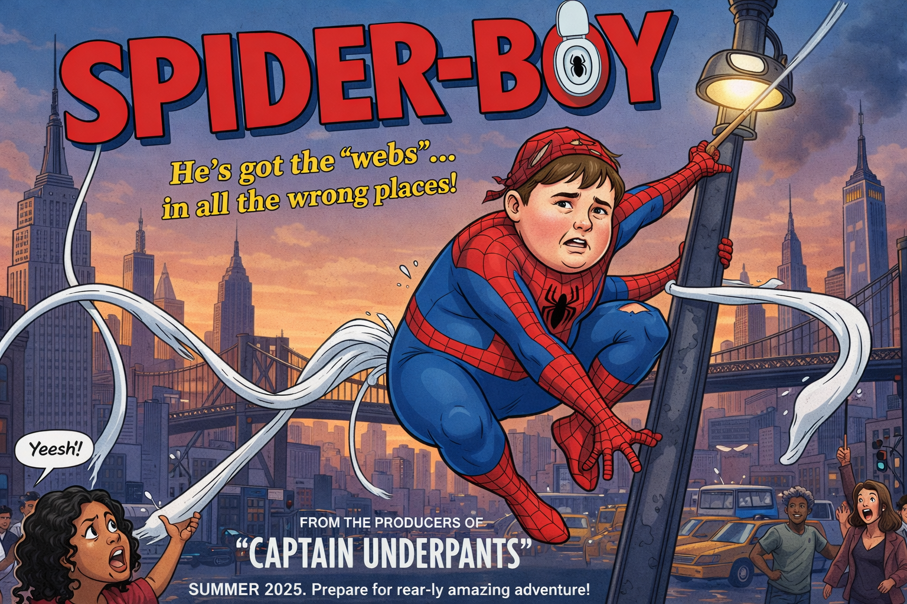

SPIDER-BOY - Le "Super-Héros"
Théo, 11 ans, élève discret de CM2 à l'école
élémentaire Jules Ferry de Montargis, passe ses journées
entre les devoirs de maths, les bâtons de colle et la
cantine. Sa vie bascule le jour où, lors de la sortie
scolaire au muséum des sciences naturelles, une araignée
radioactive — qui n'avait rien à faire là — le mord à la
main gauche pendant qu'il regardait son téléphone.
Le lendemain matin, Théo se réveille collé au plafond de sa
chambre, ce qui lui vaut un retard de vingt minutes et un
mot dans le carnet. Il découvre alors ses pouvoirs : grimper
aux murs, sentir le danger venir... et lancer des toiles.
Sauf que voilà. Les toiles, chez Théo, ne sortent pas des
poignets. Elles sortent des fesses. Personne ne sait
pourquoi. Ni lui. Ni les scientifiques. Ni la araignée
probablement.
Concrètement, pour attraper un criminel en
fuite, Théo doit lui tourner le dos, baisser légèrement son
pantalon, se concentrer très fort, et espérer que la toile
parte dans la bonne direction. Ce qui est rarement le cas.
Il a déjà collé trois passants innocents à un lampadaire,
bloqué les portes d'une pharmacie pendant deux heures, et
accidentellement scellé le sac à dos de son meilleur ami
lors d'un moment de stress en cours de géographie. Son
costume, cousu par sa mamie, intègre une trappe spécialement
conçue pour faciliter l'utilisation de ses pouvoirs. Sa
mamie ne lui a pas demandé pourquoi. Elle préfère ne pas
savoir.
Quand le Grand Méchant de Montargis entre en scène,
Théo doit affronter ses démons — et surtout sa propre
anatomie — pour sauver la ville. Le combat final dure
quarante minutes. Vingt-deux d'entre elles sont consacrées à
Théo qui essaie de se mettre dans le bon angle. La ville est
sauvée. Personne n'applaudit vraiment.

PLAY